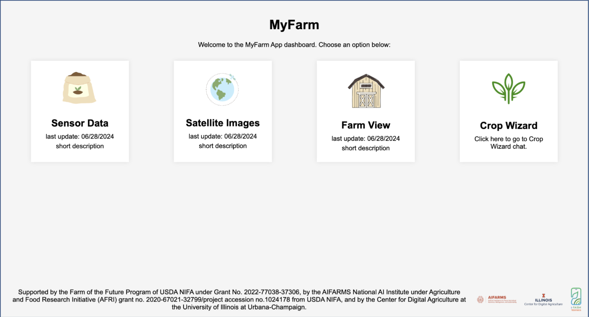
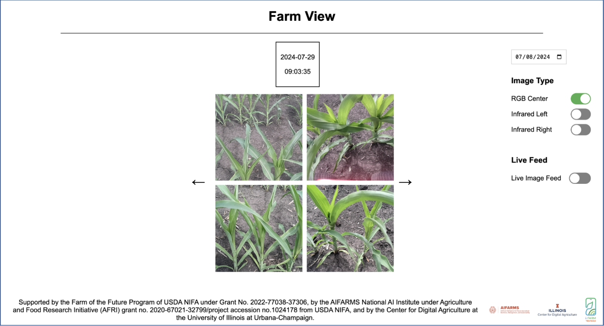
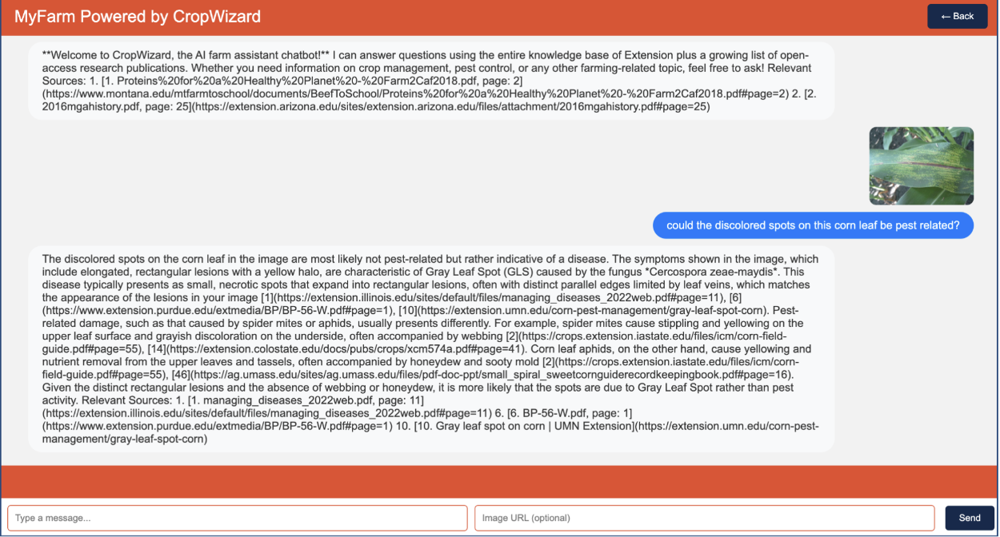

MyFarm: Virtual Farm Management System
Overview:
MyFarm is a web-based platform that helps farmers monitor and manage their crops effectively. It integrates various technologies to provide a comprehensive view of farm conditions and supports decision-making for better crop management.
MyFarm has 4 main pages; Sensor Data, Satellite Images, Farm View, and Crop Wizard chat. Each page contains different elements collected from the farm either by field deployed robots or other monitors.




Technologies Used:
- Frontend: HTML, CSS, JavaScript
- Backend: Django
- API Integration: Flask
Affiliation:
This project was part of the University of Illinois Urbana-Champaign Center for Digital Agriculture REU program. It is part of the UIUC Precision Agriculture team, under Professor Vikram Adve.